O FootLink é um dispositivo de controle adaptável desenvolvido com o propósito de atender às necessidades de pessoas com deficiência motora nos membros superiores. Sua principal função é permitir a interação com sistemas computacionais ou eletrônicos por meio dos pés, promovendo maior autonomia, acessibilidade e inclusão digital para usuários com mobilidade reduzida nos braços e mãos.
